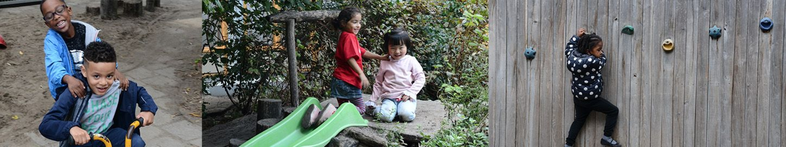
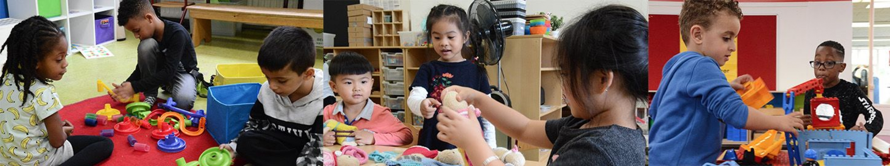
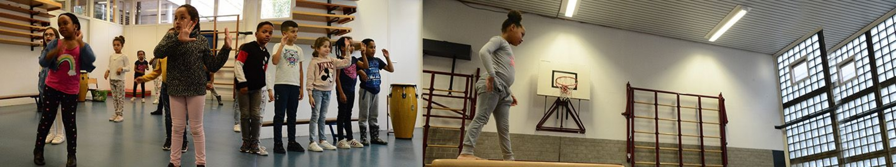

<a href=""></a>
<nav>
    <ul>
        <a href="./Nieuws.html"><li>Nieuws</li></a>
        <a href="./Kalender.html"><li>Kalender</li></a>
        <a href="./DeGroepen.html"><li>De Groepen</li></a>
        <a href="./Fotos.html"><li>Foto's</li></a>
        <a href=""><li>Praktische zaken</li></a>
        <a href=""><li>Ouders</li></a>
        <a href=""><li>De zorg</li></a>
        <a href=""><li>Lekker Fit</li></a>
    </ul>
</nav>
<!-- Slideshow -->
<section class="Slideshow">
    
    
    
    
    
    
    
  </section>

  <!----- SLIDESHOW ----->
  <script>
    var slideIndex = 0;
    showSlides();

    function showSlides() {
      var i;
      var slides = document.getElementsByClassName("mySlides");
      for (i = 0; i < slides.length; i++) {
        slides[i].style.display = "none";
      }
      slideIndex++;
      if (slideIndex > slides.length) {
        slideIndex = 1;
      }
      slides[slideIndex - 1].style.display = "block";
      setTimeout(showSlides, 7000); // Change image every 7 seconds
    }
  </script>